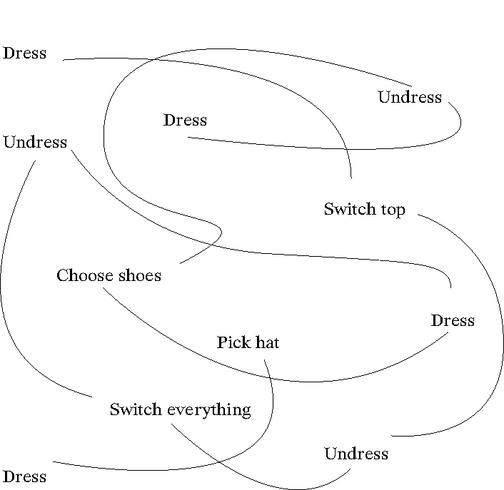
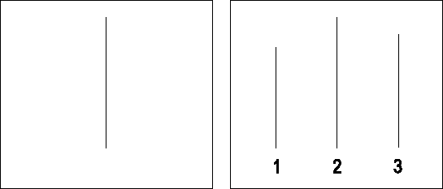
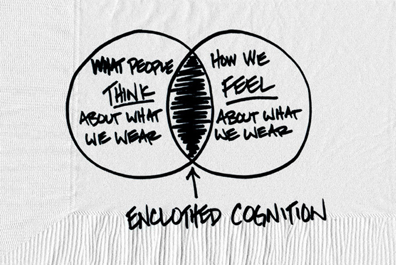

Are you
awear
aware
of what
you
ware
wear
Abstract
The body represents an inseparable part of the human body that forms the basis of our being. Clothing is an element that is inextricably linked to humans and distinguishes us from other beings, we are the only creatures who make and wear clothes. We have the option and possibility to purchase a second skin, which can be varied endlessly, which gives us the opportunity to express ourselves visually.
We all dress according certain codes, written and unwritten, that have built-in rules about the message sent by what a person wears and how they wear it. As a general rule, clothing/dress should be chosen according to the type of audience, the event and the purpose. With those three key elements in mind we think of a way to representative in the for ourselves most comfortable way.
We as humans are constantly conscious about our clothing, even though we are not always aware of the decisions we make while dressing. Wearing certain kinds of clothes can affect the way we behave and change the way we think. The way we communicate in a society dominated by visual information is through visual information. When we want to understand our surroundings by visual information, our clothing is one of the most important, it comes a symbol of who you are and what you want.
Opening the eyes
From the perspective of a Graphic Designer, my perspective, the role and function of Graphic Design is, and always has been, communication. It contributes to the formation of social and cultural identities. Racial/ethic groups, age groups and gender groups are represented in Graphic Design, as well as how images and texts com- municate with different cultural groups. The meaning of the message within graphics as a form of communication depends on the interpretation both from the narrator and from the recipient.
Knowing that is a certain form of communication that I use, I became more and more aware of another form of communication that I conscious and un- conscious use to convey a/my message.
Knowing myself that I have a visual brain I often subconsciously attach a lot of value to visual communicative elements. By reading visually, I receive certain information that contains messages without having added verbal information. The starting point of my research is my own curiosity about telling a message through clothing, how I am aware of this behaviour of my own and how I can (learn to) understand the message sent by others. Through field observations, interviews and experiments with a diverse group of people around me, I think I can discover patterns that are underpinned by theoretical research. What is the origin of clothing, what rules do we adhere to, what certain choices the dressing process contains, why we wear what we wear, what our clothing says about us and how we convey and read this visual information.
Getting ready 1.0
While getting ready to go outside, I’m passing by 3 different mirrors in my house 1, who all show a different perspective of the way I look because of the light, placement and shape of the mirror. I’m constantly conscious of the way I look, the way others will look at me and this visuali- sation is a freshly made memory in my head.
Is this outfit representing my mood?
Am I not to coldly dressed when I go home at night?
Will this hat be comfortable on the bike?
Maybe I will cross some acquaintances on my way
Those shoes are a bit too big
What if this color combination will bore me after an hour?

And a 100 things added to this makes me wonder why I am so aware of what I’m wearing and why it bothers me that everything has to be ‘good’. For me, it is not even about the ‘good looking’ or ‘trendy’ but more about the combination if it fits my mood and the relevant social occasion.
‘Go dress up in a nice way to go to your grandparents today!’
‘I’ll wear my chique dress to go out for dinner tonight.’
‘Those old jeans are perfect for today’s gardening.’
‘Is this outfit weird enough for this art party?’
‘The dress makes the woman.2’
Have you ever noticed that we, conscious or unconscious, dress in a way that suits our surroundings? We adjust our way of dressing to another person, place or event based on written and unwritten dress codes in fashion language. Some of the codes are facts and clearly written but most of them are not factual and even self-acting. Clothing is a way to express ourselves, a way of nonverbal communication, just like spoken language but based on visuals and interpretation.
Start
Clothing has been created as a need to protect humankind from external climatic conditions and changes (a physical need), adornment and identification (psychological need), and modesty and status (social need). The first traces of dressing can be found 100.000 years BC, this has been shown by the discoveries of ancient cave drawings, statues and remains of the materials used for making the skin covering: clothing.3 According to archaeologists and anthropologist the first clothes were made from nature elements: grasses and leaves, animal skins and furs and bones and shells. Clothing was draped or tied and leather sew together by needles made out of animal bone. The sewing methods developed over time and individual items we’re made for costumers, followed by inventing the sewing machine, at this time the ready-made clothing industry took off.
At a time when visual communication seems to overtake verbal communication, in the way that a visual message is communicated and understood more quickly and easily than an actual verbal message, there is increasing interest in the aspect of clothing as one of the means to achieve this. Clothing and fashion have become a kind of two-unity, in which the form is translated into clothing, which makes fashion more voluminous.
'The own body is accidental for human. What he has, he can and can not be. He can adopt very different attitudes towards what he has in terms of physicality. His body and its properties appeal to him to seek and develop the design of his existence in a particular direction. In combination with a personal choice for a way of life, this leads to a specific behavioural pattern.'
Prof. Buijtendijk - de Vrouw.4
The need for covering the body was followed by human motivation for giving aesthetic meaning/sense to garments. Next to covering and embellishing the body, humans came up with another reason to wear clothing: To communicate in a non-verbal way about their cultural identity including their community or country of origin at any given historical period. A complet set or garments including ornaments and hairstyle was invited: costumes. The costume is the distinctive style of dress of an individual or group that reflects their class, gender, profession, ethnicity, nationality, activity or epoch. The term also traditionally described typical appropriate clothing for certain activities, such as riding costume, swimming costume, dance costume, and evening costume. The appropriate and acceptable costume is subject to changes in fashion and local cultural norms.
'High heels, necked down waistlines, wide shoulder lines and tight skirts. The shops are full of these uncomfortable clothes, in which not to cycle, walk and live a normal life. Fifty years ago we threw off the corset and now it is ready for us again. It seemed so nice to go in the right direction. The fashion was no longer conceived in Paris, but came from the street.'
— Erna van den berg in feminist monthly magazine OPZIJ5
| 1. Cultural aspects |
Gender differentiation, social status, religion, contemporary clothing, western dresscode, spread of western styles, ethic and cultural heritage, sports and activity, fashion |
| 2. Political issues |
Working conditions in the garments industry, fur |
| 3. Life cycle |
Clothing maintenance, laundry/ironing/ storage, non-iron, mending, recycling, global trade |
The basics
'One is never over-dressed or under-dressed with a Little Black Dress.'
— Karl Lagerfeld
'What you wear is how you present yourself to the world, especially today, when human contacts are so quick. Fashion is instant language.'
— Miuccia Prada
'Style is something each of us already has, all we need to do is find it.'
— Diane von Furstenberg
'Fashion is the armor to survive the reality of everyday life.'
— Bill Cunningham
'Anyone can get dressed up and glamorous, but it is how people dress in their days off that are the most intriguing.”
— Alexander Wang
'I always find beauty in things that are odd and imperfect, they are much more interesting.'
— Marc Jacobs
'Fashion you can buy, but style you possess. The key to style is learning who you are, which takes years. There’s no how-to road map to style. It’s about self expression and, above all, attitude.'
— Iris Apfel
'In order to be irreplaceable one must always be different.'
— Coco Chanel
'Elegance is not standing out, but being remembered.'
— Giorgio Armani
'The way I dress depends on how I feel. I never have to psych myself up. Usually it just feels like it works.6'
— Rihanna
Dress codes are a set of written, and more often unwritten, rules with regard to clothing. They are created out of social perceptions and norms, and vary based on purpose, circumstances, and occasions. Different societies and cultures are likely to have different dress codes, Western dress codes being a prominent example.
Dress codes have determined how we dress and what we wear for centuries and have aimed to create a sense of status or uniformity but can also hinder self expression. Throughout history both written and unwritten dress codes have come and gone either from being challenged or phasing out. Zooming in on western dress codes7 about what kind of clothes are worn for what occasion that are traditionally categorised into formal wear, semi-formal wear and informal wear.

Ceremonial dress, military uniform, religious dress, academic dress and costume that are appropriate for formal occasions and are generally permitted in addition to the respective dress codes known for many and are generally permitted as additional and / or alternative exceptions to the uniformity.
When our day consists of different situations and occasions, it often happens that we have to switch between certain dress codes, for example between home and at work. This often unconscious ability is the result of cultural adaptation. Certain clothing regulations have built-in rules or signals that indicate which message the clothing we wear communicates and how this message is then read by the recipient. This message provides indications of the wearer's gender, income, occupation and social class, political, ethnic and religious beliefs, attitudes towards comfort, fashion, traditions, gender expression, marital status, sexual availability and sexual orientation. Clothing communicates multiple social messages, including establishing or pretending a particular personal or cultural identity, establishing, maintaining or defying norms and values in social groups, and valuing comfort and functionality.
| Formality |
Typical events |
| Formal wear i.e. “Full dress” |
Weddings, state dinners and affairs, formal balls, royal events, etc. |
| Semi-formal wear i.e. “Half dress” |
Theatre opening nights, charity balls, holidays etc. |
| Informal wear i.e. “Undress” |
Diplomatic and business meetings, many social occasions, everyday wear |
| Casual wear |
Mostly based on unwritten dress codes |
| Formality |
Day |
Evening |
Military |
Ladies |
Supplementary |
| Formal wear i.e. “Full dress” |
Morning dress |
White tie |
Full dress uniform |
Ball gown |
Ceremonial dress, religious clothing, folk costumes, orders and medals, etc. |
| Semi-formal wear i.e. “Half dress” |
Black lounge suit |
Black tie |
Mess dress uniform |
Evening gown |
|
| Informal wear i.e. “Undress” |
Suit |
Suit |
Service dress uniform |
Cocktail dress |
|
| Casual wear |
Anything considered inappropriate for more formal occasions |
|
|
|
|
Speaking up
The body represents the only support or shelter that a person can rely on, it is an inseparable part of the human body that forms the basis of our being. Malinowski8 (anthropologist wrote on ethnography, social theory, and field research) says clothes are used for protection while clothes can be functional, like work clothes can offer protection and fit the specific needs of the work environment.(quote) But what kind of meaning do we give to clothes nowadays and what are we communicating with the clothes we wear?
Clothing, dress, is an aspect of non-verbal communication9, existing out of clothing as in textile, jewellery, bags, hats and glasses. Clothing communicates nonverbally clues about a persons personality, background and social status, it can demonstrate your culture, mood, level of confidence, interests, age, authority, values and sexual identity.
Through clothing, non-verbal communication takes the first step in our lives, showing our appearance and representing our subjective inner world. We communicate with others, show acceptance or rejection, make people understand that something is likeable or social through clothing. With clothing, we transfer information between the messenger and the recipient through visual messages such as symbolism or a specific clothing culture. In this way, messages and information about ourselves are visually sent and received. The meaning of the private and public space is linked to clothing, it represents the relationship between person and personality through clothing, which is inextricably linked to the environment and surroundings. By observing and analysing the relationship between person and society, it becomes clear that clothing, and wearing it, belongs to the medium of interaction between body and society. The national, wealth and status background of a particular person can be visually noticeable by wearing certain clothes. In this, certain attitudes and affinities can be pointed to different lifestyles such as specific cultural, professional and artistic.
What am I wearing?
I am always aware of what I am wearing, even if it is a 'I don't care' kind of day, I am still aware of 'not caring' about my surroundings. We, as humans, are constantly aware of our garments and what we communicate with them towards ourselves and our surroundings10.
As part of my research I contacted 30 people around me to send in pictures of their looks/outfit 7 days in a row. The only information that I gave them was to send me a picture before leaving their current location with some extra information about their destination. The images combined are giving insights to what the same person is wearing on 7 different days, but also what 30 different people are wearing on the same day.11
Taking in account that this research is done in July 2020, in the middle of a pandemic and summer break. It clearly emerges in this visual study that most of the people work from home or go out to enjoy a hot summer-day.
By asking to take a picture before going out of the house and mention the destination this gives me, the reader of the images, enough information and space to analyse the unconscious clothing behaviour. Questions asking while reading the images:
Who is the person?
Where is the person?
What is the time?
What is the weather like?
What is their destination?
What is the person wearing?
Does it look comfortable?
Overarching:
is the person aware of what they are communicating with the clothing?
Both Lilo's and Sep's process show that the choice of clothing originated from several different elements like activity, destination, weather, comfort, mood, time, surroundings and overall: style.
Nice weather > time for a dress
Meeting others > more effort and attention for outfit
Overslept > less time > comfortable
Full day of different activities > something easy that suits all
Not going out > something not really representative
Meeting + sports > not to crazy and comfortable
Hot and nothing special > light and easy
Online meeting > representative at the top, comfortable at the bottom12
In many cases, these ever-changing elements influence most of the choice of clothing we choose to wear. In some cases, however, there is one specific element that takes over: style. (see images 9.3-9.8) When the choice of clothing is a continuation of a conscious process in which personal rules are adhered to, influencing elements from outside will be less visible.
The person in image 9.3 shows repetitive behaviour, conscious or unconscious, both the location and the body language are almost identical on all 7 days. This is the same case images 9.4 & 9.5 In images 9.6 - 9.8, besides style, more elements play a role, which can be seen in small changes in clothing or the environment. There are still some rules of their own here, but these seem to be more flexible when it comes to comfort and surroundings.
A contrasting visual communication is found in images above. Style is still visible in the clothing but there are multiple elements that influenced the dressing process, like the weather, work, location. The week was more diverse what resulted in different ways of dressing.
What is immediately noticeable in these images is that the first two days contain a lot of motivation to dress nicely. This concerns various reasons, both objective and subjective, such as: clean laundry, rested, fresh start. Only 13 people out of the 30 made it to the last day.13
In day 3 the the common element that the participants consciously thought about in this photo is the weather. The temperature was high on this day and this makes us want to cool down automatically, for example by wearing light and airy clothing. The number of items of clothing is kept to a minimum, which can also be a reaction to 'no time' in the morning because we want to be part of the warm weather early on the day. This is an element that happens mostly unconscious based on multiple of elements like comfort, weather, time and destination.
When the temperature rises, we tend to put less time and energy into our clothes. Simply because it is too hot and not necessary, we subconsciously put less energy into dressing ourselves. Because the participants mentioned their location and destination when sending the photo, it became clearly visible that we put more effort in getting ready when the destination is not the ordinary. Most of the time when the thoughtful process of dressing is done with awareness and purpose, comfort in our clothing and the corresponding body-language will show more confidence.
Coming back to the main thing I was questioning before receiving the photo’s:
is the person aware of what they are communicating with the clothing?
Throughout the 7-day experiment the people asked became more aware of the why's of what they are wearing. This shines more light on the unconscious part of dressing, it became part of their routine to ask certain questions. in the process of getting ready. Comfort is one of the key elements in this process, and clearly visible, though discomfort is harder to recognise. When looking at those people on the images and reading the clothing, as readers we interpreted the information being communicated from our own perspective which is based on our values and experiences. Because the message is presented by the bringer from their own perspective and then read from a different perspective by the reader, it regards a two-way visual communication.
Following the crowd
'Fashion clothing is always group clothing, in which one participates in a personally experienced manner.'
- Prof. Buijtendijk14
'Within each group there is the possibility of a conventionally determined latitude in which one expresses one's personality.'
- René König15
Clothing is an element that is inextricably linked to humans and distinguishes us from other beings, we are the only creatures who make and wear clothes. We have the option and possibility to purchase a second skin, which can be varied endlessly, which gives us the opportunity to express ourselves visually. We are born equal, after which there is a direct escape from that equality by distinguishing ourselves and thereby proving our own individuality.
Relatively closed groups include members who adapt their behaviour and actions to each other, creating group behaviour. Dressing behaviour is part of this, making it recognisable to be part of a group identity that communicates something to the 'outside world'. To be seen in groups such as: teenagers, artists, students, business people, hipsters, creative, etc. Within the prevailing group identity, there is also an individual identity based on, for example, taste, adaptability or excitement. However, it almost always falls within the standards of the group the individual wants to be a part of.
Through a certain way of dressing, group members use a form of non-verbal communication that visually clarifies their standards and values. This way of communication creates an opportunity to convey specific personal, social and conventional views on values, aesthetic criteria and ideas. These emphasise something about the social position and diversity of both the entire group and the members of the particular group concerned. Clothing indirectly presents various social events in society, providing insights into the way of life in a particular time, shaped by rules in combination with fashion.

Solomon Asch16 conducted an experiment to investigate the extent to which social pressure from a majority group could affect a person to conform. Participants were first shown the first image of a stick, after which they had to point to the same stick in the second image.
This example illustrates how group formation can work in practice: if your environment makes a decision and goes in a certain direction, it feels natural and comfortable to go along with it. This human conformation behaviour has two reasons: because they want to be part of a group, want to fit (normative influence) and because the group contains more information (informative influence).17
Complete uniformity of a group leads to uniformity. This is visually striking when certain people within activities are consciously equalised within activities, such as soldiers, members of brass bands, majorettes, nurses, flight attendants, police officers. The recognisability of the clothing is the visual power of group behaviour and what this radiates. In contrast to fashion, which moves with the times, uniformity is the capacity for recognisability and constant form. In a broader sense, the difference between uniform and fashion is the contrast between tradition and culture. Desire for certainty with appropriate strict rules represents tradition, in which forms of change are avoided.
Contrasting with this is the insecurity of man and the fundamental existence where fashion is experienced as a helpful element. These forms of traditional or cultural orientation can be found in different social groups that express themselves visually.
Important factors in the development of fashion are rivalry and competition, which arise when there is clear group formation and class differences. The group wants to distinguish itself through clothing and behavioural patterns and thus radiate a certain exclusivity. This development in fashion led to prestige economics and demonstrative consumption associated with a welfare state. Consumption behaviour arises through free time and money, which causes a visible drift of social groups, each of which differs from the other in different ways. The upper layer of society can be described as the elite next to less economically wealthy groups. Both groups represent themselves, influenced by fashion, in a different way and can be named ‘Communities of style’18. Communities of style indicates a group sharing an identity, we belong to many different communities of style. Families, school buddy's, music groups, ethic and cultural groups. Communities of style have to do with shared values and shared experiences, about specific activities that people like doing together, the ways how people think.
Looking at others
Modern people are constantly trying to understand you through reading visual information. When we look at another person, we do not just look at their clothes, we try to see the information under it. Our clothes communicate, in the same way that symbols do, like an extension of our body language.
The way we communicate in a society dominated by visual information is through visual information. When we want to understand our surroundings by visual information, our clothing is one of the most important, it comes a symbol of who you are and what you want. You are able to faster communicate your message through clothing than with words. Our brain is unconsciously trained to read visual language better and faster than spoken and/or written language.
Our society has developed and the amount of people we meet in a day has increased a lot and so has the amount of visual information that we have to process. Everyday we perceive thousands of different images, all this information has to be stored somewhere, otherwise every morning we have to start all over again. Our brain categorises, it maps former experiences, therefore it understands the connection between different kinds of clothing and the person wearing them. The information our brain is giving us, is not always true, but it is the information our brain is giving us. The information that fits with earlier experienced similar situations.
How our brain constructs the way we feel or behave and makes decisions in a certain situation is called priming, studied by John A. Bargh in 1996. It when our exposure to a certain stimulus influences our response to a subsequent stimulus, without any awareness of the connection. These stimuli are often related to words or images that we see during their day-to-day lives. Images can put thoughts and feelings in our subconscious and can change our behaviour. We can behave in certain manners based on the things we have read, heard en watched.
When we don't know how to behave, we are learning what is right to do by looking at our surroundings, it can be an automatic kind of response to do the same thing as the conspecifics around you. Mimicry can cause bonding, liking and feeling. Behaving in the same way as people around you produces a feeling of union and liking for the group and the group effort. This group formation has been visually recorded by the ongoing ‘Exactitudes’ project. Photographer Ari Versluis and stylist Ellie Uyttenbroek
run Exactitudes, a project that visually recorded of more than three thousand neatly differentiated social types the artists have documented over the last twenty years.
You are what you wear
We as humans are constantly conscious about our clothing, even though we are not always aware of the decisions we make while dressing. To gain more information about the conscious and the unconscious decisions I decided to ask 5 simple questions to people who are part of different groups in society that have, in a way, their own written and unwritten dress codes. The questions asked are simple and direct, they are about everyday choices that have become part of their thinking pattern.
1. What is your favourite kind of outfit to wear?
2. What is your most comfortable outfit to wear?
3. What kind of outfit would you wear to show off?
4. What would you rather not wear?
5. What kind of outfit would you rather not be seen in?
What was immediately noticeable when asking the first two questions was that people mostly answered automatically, this seems to go unconscious in a certain kind of ‘automatic mode’. With the third question people became more aware of what they were saying, conscious thinking played a bigger role here, this links back to the process of putting more effort in dressing. Questions four and five balance somewhere in the middle, the participants were conscious about what they would not wear or would rather not been seen in, however, this process is often unconscious. Thinking about what you would rather not wear has to do with certain aspects of written and unwritten dress codes that are coded in your behaviour and surroundings, based on this there will form a personal dress code.
'There is a lot of stuff I would not wear because of the connotation of it or when it's not aesthetically pleasing.'
'I would not feel comfortable wearing something knowing that it's not my style anymore.'
'It is embarrassing to wear something that is openly connected to being not sustainable and/or child labour.'
'The origin is a way bigger embarrassment to me that how it looks.'
'It depends on the activity.'
'The best kind of outfit I feel like a character in.'
'If I see a lot of people doing it, I stay away from it and let me try something else.'
'I would not want to be seen in anything that my parents used to dress me in when I was younger. Growing up in India there is a big difference between what you are required to wear and what you really want to wear.'
'I would not wear white trousers because that is typically Dutch. Especially in the summer, all the white trousers come out.'
During the Q&A in a digital/online lecture about communication of clothing given by Diana N’Diaye22, curator at the Smithsonian Center for Folklife and Cultural Heritage, the following question is being asked: “Describe an article of dress, an accessory you wear or a hairstyle that defines who you are or where you are from.”
The participants in the lecture have diverse backgrounds and wear different cultures, which provides answers that are based on rules within the social groups of which they belong. What is completely self-evident to someone in one culture is unthinkable for someone in another culture. In the answers given in the Q&A, certain topics clearly emerge: comfort, fashion, style, symbolism and above all culture. The above elements can exist independently but also be combined, this is an unconscious self-learned process in which conscious choices are made. These topics are all part of psychological processes that take place at the time of getting dressed.

The term "unclothed cognition" discribes the systematic influence that clothes have on the wearer's psychological processes. A combination of symbolic meaning and the psychological experience of wearing the clothes, constantly reminding what those clothes represent. Cognitive psychologists Hajo Adam and Adam Galinksy23 from Northwestern University came up with this term after questioning if clothes affect our basic psychological processes and the way that we behave in the world. Followed by examining the psychological and performance-related effects that wearing specific articles of clothing have on the person wearing them. Human thought processes are based on physical experiences who are associated with abstract concepts, like those generated by the clothing we wear. Simply said: we think differently based on the clothes we wear.
Damhorst (1995) suggest this model, which places clothes in contexts of the materials and their condition (inner circles); how the clothing sits on the body (likes shapes and patterns); the body of the wearer (its size and movement); the social relationships and shared visual rules as part of changing different cultural contexts.
Wearing certain kinds of clothes can affect the way we behave and change the way we think. By putting on clothing it essentially becomes who you are, it carries moods and abilities that exist outside of you into your bloodstream and brain, at least temporarily. There are many reasons why we dress in a certain way, why we pick one cut, colour and fit and not the other. One of the reasons is the way that we were raised and the things that were exposed during that time. There is less comparison in the mind when you are young so everything shown and learned has a crucial effect, we tend to pick garments that our parents were wearing. Our taste in clothes comes from a subconscious place, what makes it obvious that our parents, or the people we grew up with, affect multiple elements that influence our choice in clothing. Next to this we tend to choose for comfort, safety & security.
Getting ready 2.0
Now ask yourself before getting ready:
How am I feeling today?
How do I want to feel today?
Where am I going?
Who am I going to see?
Who am I?
Who do I think I am?
What can I wear?
What can't I wear?
What should I wear?
What shouldn't I wear?
And now when you are ready:
Are you ready to be looked at?
Are you sending the messages you want?
Are you telling the world who you are, who you want to become and what you want in life?
The simple act of waking up in the morning and choosing to be a certain way and deciding what will go on your body is one of the most decisions that you will make everyday in your life. If you can wake up in the morning and make a decision about what it is you want to be, through one thing that is the most obvious form of self expression, and the extension of who you are as human beings you become to realise that anything is possible simply because you have chosen to be.
If our clothing is an extension of who we are and we neglect it, we discourage it and we are not true to it ultimately we are taking away and we are denying who it is we choose to be as human beings.
Closing the eyes
If the receiver’s code of interpretation is different from the sender’s code of communication, misinterpretation happens. Consciously constructing, assembling, and wearing clothing to convey a social message is determined by the current fashion within a particular culture. The rate of change of fashion varies, clothes and its accessories within months or days, especially in small social groups or in communications media-influenced modern societies. Bigger changes, taking more time, money, and effort to effect, may span generations.
What external and internal factors influence our pick of clothing? When fashion changes, the messages visual communicated by clothing change. The context changes you. You can be a different person in different places with certain values and behaviours, called situation identities. When your mind is set towards a specific place, thinking about it will influence your decisions about the clothing you put on.
So how do we, regarding to (un)written dresscode, (un)conscious communicate with clothing?
We all dress according certain codes, written and unwritten, that have built-in rules about the message sent by what a person wears and how they wear it. As a general rule, clothing/dress should be chosen according to the type of audience, the event and the purpose. With those three key elements in mind we think of a way to representative in the for ourselves most comfortable way. Clothing represents meaning that can be interpreted in many ways based on references and culture. Cultures and styles are dresscode particularly to a community shoes that there is a community of dress, once you go out of this community it can become something people don’t accept and then we mostly automatically adapt to that because we learn to adapt to a new dresscode whenever we go to different places. Observing how people react on how people dress in different places makes us aware of the dresscode that is active at a specific place. We save memories from an age of 5 that unconscious influence our mental processes of what we want and don’t want to wear.
We change our looks by setting a goal, doing this can form us into different shapes that have their own kind of identity. Those goals are forming by not actually consciously knowing and/or thinking about them and then integrate in our clothing behaviour. This is why we, with or without conscious, not only adjust our looks to written dress codes but also to unwritten dress codes.
While doing different types of research I became aware of my own position and attitude towards the communicative aspect of clothing in our daily lives. My way of looking has become more conscious and I notice that I receive more non-verbal communicative signals, let them digest mentally before the information will change to unconsciousness behaviour. By consciously analysing people’s clothing behaviour, connected to specific information about the origin and destination, I become more advanced in reading a message being told in a non-verbal way.
Now look again
I am fascinated by the psychological process behind people’s clothing choices, analysing this is like reading an image combined with vibrant social aspects. This is the main topic that I want to delve into by doing research from my own perspective, using my eyes as a camera that recognises, stores and processes certain elements of visual communication.
For the last few months, since March 2020 I’ve been recording small random clips with an older digital camera. Doing this became natural and now recording with the camera feels like using another eye that reads visual information without me being aware of it the moment while recording. I started analysing the clips to distract a pattern based on the key elements within the psychological process of decision making while getting dressed.
Bibliography
Images
Readings
Video & Audio